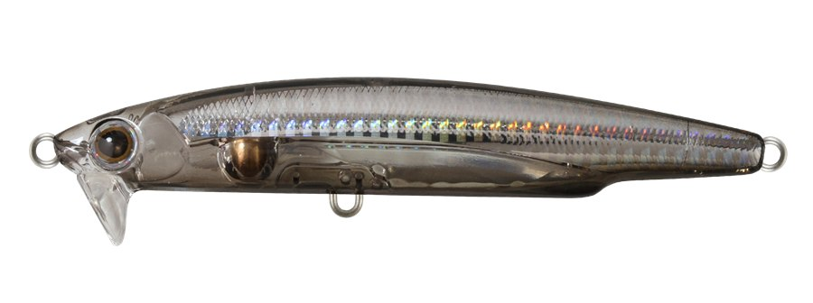
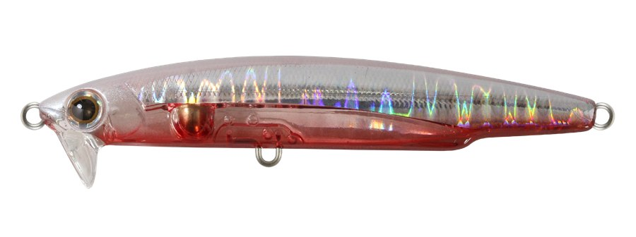
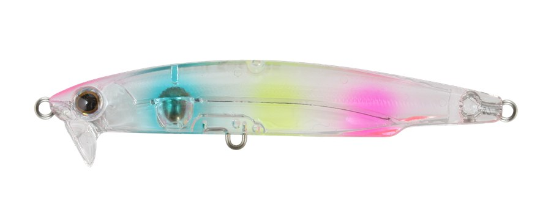
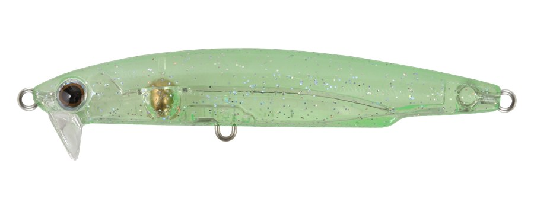

ビートイート63S
（Beat Eat 63S）
ビートイート63S（Beat Eat 63S）はBASSDAY(バスデイ)のメバルミノーです。
メバル攻略のためのミノー。主なターゲットはメバルです。
大型メバルを狙って獲るにはミノーが欠かせない――そんな考えから、反応のいい小型ミノーで、シャローレンジ専用設計、しかも飛距離も出るようにと開発されたのがビートイート。63Sはその63mmモデルです。

画像出典:BASSDAY公式HP
スペック
- メーカー
- BASSDAY(バスデイ)
- タイプ
- スローシンキング
- 全長
- 63mm
- 重量
- 3.7g
- フック
- #10
- リング
- #2
- カラー
- 全10色
- ターゲット
- メバル
- 価格
- 1,870円（税込）
- 発売
- 2026年秋
▼今すぐチェック


ビートイート63Sの特徴
巻き始めると急浮上する、ハイリフトリップ
-
HIGH LIFT LIP
逆スラント・扇状・幅広のハイリフト（高揚力）リップで、巻き始めると急浮上。巻く速さで、水面直下からボトム付近までレンジをキープできる。
-
超タイトアクション
ベイトフィッシュに近づけた、震えるような超タイトローリング。ただ巻きでバイトを誘い、トゥイッチにも素直に反応する。
-
光を集めるソリッドのベリー
ベリー部分は光を集めるソリッド構造。乱反射で刺激を倍増させる。スローシンキングで、着水からの根掛かりを避け、潮に乗せやすい設定。
ビートイート63Sの使い方
基本はただ巻きです。着水したら巻き始めると、ハイリフトリップで急浮上し、レンジをキープしながら泳ぎます。
巻く速さで泳ぐレンジが変わるので、表層から少しずつ速さを変えて、反応のあるレンジを探しましょう。潮に乗せて流したり、トゥイッチを入れたりするのも効果的です。
ビートイート63Sの得意な状況
藻場やゴロタなどのシャローで、大型のメバルを狙う時が得意です。
ほかのアングラーが攻めていない沖の竿抜けを、飛距離を活かして探るのにも向いています。
ワンポイント
ビートイートには47mm・55mmのモデルもあります。63Sは自重が増えたぶん飛距離が伸び、47・55より沈みが緩やかです。
オススメカラー
ビートイート63Sは全10色。そのうち4色を紹介します（画像は公式より）。

HS-209 クリアーブラックホロシルエットとホロのフラッシング。まず1つ選ぶならこの色。

FL-238 パールバックレッドパールの背中と赤いベリー。

C-350 クリアーキャンディークリアに色を散らしたアピール系。

GG-276 クリームメロングローグロー入り。夜や暗い場所に。
画像出典:BASSDAY公式HP
ビートイート63Sに似ているルアー
-
 ラプター50SS
レガーレ
詳細はこちら＞
ラプター50SS
レガーレ
詳細はこちら＞
流れの中で食わせるメバルプラグ。
-
 ブローウィン50S
ブルーブルー
詳細はこちら＞
ブローウィン50S
ブルーブルー
詳細はこちら＞
ライトゲーム用の小型シンキングミノー。
-
 アミコン40S
ブルーブルー
詳細はこちら＞
アミコン40S
ブルーブルー
詳細はこちら＞
マイクロワインドプラグ。